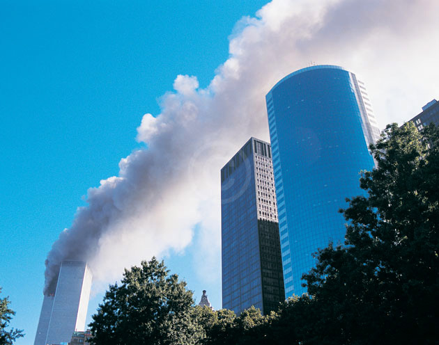

|
|
||||
|
REMEMBERING SEPTEMBER 11  Today is September 11, 2002, - the whole world is commemorating the one-year anniversary of the horrific event of last year- remembering the fanatic zeal that caused religious terrorists hijack airliners, and turned them into weapons for destruction. Thousands died at the World Trade Center, the Pentagon, and in rural Pennsylvania where courageous passengers tried to fight back against faith-based violence and terrorsm. This is the time we desperately need Freethinkers, Humanists and secular people all over the world who reject religious creeds in this time of crisis! We do agree with Richard Dawkins here - "Those of us who have for years politely concealed our contempt for the dangerous collective delusion of religion need to stand up and speak out. Things are different now. All is changed, changed utterly." [Moderator, Mukto-mona 11/9/2002.]
September 11: One year on United States of America
U.S. Newspapers, Maganizes, and Journals
Canada
Great Britain Middle East
Mukto-mona (Articles)
Mukto-mona (Cartoon and Lampoon)
Statement from Freethinkers on Last Sept. attack
Other Websites and Articles about 911
|
||||